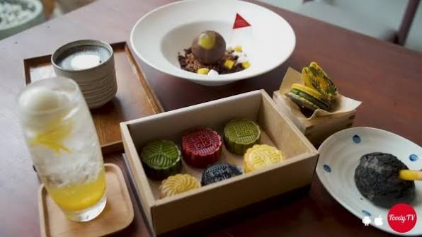

Cà phê muối: vị mặn ngọt gây thương nhớ
Món cà phê có lớp kem muối béo mịn, bắt nguồn từ Huế và nhanh chóng được yêu thích ở nhiều thành phố.
Đọc bàiMón cà phê có lớp kem muối béo mịn, bắt nguồn từ Huế và nhanh chóng được yêu thích ở nhiều thành phố.
Đọc bài
Mỗi loại trái cây phù hợp với một nhu cầu khác nhau: giải nhiệt, tăng đề kháng, làm đẹp da hay bổ sung năng lượng.
Đọc bài
Chỉ cần phin hoặc bình French press là bạn đã có thể pha một ly cà phê ngon như ngoài quán.
Đọc bài
Mỗi tháng quán giới thiệu thức uống mới từ nguyên liệu theo mùa, để khách luôn có trải nghiệm mới.
Đọc bài